DimpleDesk is a Data-Driven Responsive Web Application, that enables hosts to list workspaces, and tenants to find and rent workspaces efficiently. The project development took place within 12 weeks, from concept ideation and research to design, development and execution.
The design and Development team is consisted of 7 members, 3 Designers (One Designer as Project Manager) and 4 Developers. You can find the team member's information on the Member's information Tab above.
Problem
We will be solving two main problems: First, people want to rent out extra workspace in their homes during business hours for additional income. This enables privacy during non-working hours. Secondly, people want a dedicated workspace away from home when their workspace at home does not meet their needs.
Solution
We will be solving these two problems by creating a web platform that enables hosts to list workspaces and tenants to find and rent workspaces that suit their needs easily. We will be focusing on designing and developing the tenant side of the platform for MVP.
Supporting Features
Search Listings
Our extensive collection of listings enables users to search and view workspaces from anywhere.
This feature provides people without ideal workspaces a way to find personal workspaces for rent and homeowners to showcase their extra home workspaces. For tenants, this solves their problem of not having ideal workspaces at home by providing affordable alternatives. The listings will be created by homeowners who have underutilized workspaces at home. Listing creation is scoped out of the MVP version of the platform.
Contact Host
As a call-to-action, users may contact hosts directly from a given listing’s details page.
This feature provides a method for potential tenants to contact the host of a workspace listing. When a potential tenant contacts the host, the system will send out an email to the host (tenant’s profile information, interested listing, and interested dates) and another email to the potential tenant (contacted host confirmation, interested listing, and interested dates). Potential tenants can find the contacted list on “contacted”.
Workspace Listing Filtering
We make it easy for users to find workspaces and filter based on desirable amenities.
This feature allows potential tenants to quickly browse through and find listings that meet their needs. Potential tenants will be able to search through listings by filtering down the options by workspace type (private or shared), rental terms (daily / weekly / monthly), amenities, and professional interests. This solves the potential tenants’ problem of not being able to find workspace listings that meet their needs quickly.
Competitive Analysis
Design Schedule
We developed our Design concept from emphasizing on problem to Project Launch within 12 weeks. To specify context of use, our team conducted extensive market research and competitive analysis to plan, define scope, and lockdown features.
During ideation, and within the span of 4 weeks, we collaborated on design and iterations of wireframes and visual assets on platforms such as Figma and Creative Cloud. Development of each iteration was built on bi-weekly sprints, which helped us manage tasks and maintain design integrity.
My role as Design Lead consisted of planning for the design schedule and getting approval from the Project manager to ensure deliverable deadlines meets the project development pace. To keep track of the progress of Designers, I broke down deliverables into work packages, and assigned tasks to design team members based on their interests and area of expertise.
Development Schedule
During the first sprint, the Development team planned on the features and conducted research. During weeks 3-4 the development environment was set up and the development process began during weeks 5-7.
By week 8 of Development schedule, we got started on the Alpha build testing and refining bugs accordingly. Code freeze process took place during week 11, which helped us prepare for the presentation preparation, platform demo and rehearsal that took place during week 12.
System Architecture
Our front-end (including React and SASS) and back-end (including NodeJS and ExpressJS) repositories are posted on Github, and we are hosting both on Heroku. We are using MongoDB for the database and Amazon S3 for image storage. We are using SendGrid for emails and Auth0 for authentication. We chose this tech stack so that we could focus on building upon the best tools for our MVP.
Data Driven Feature
User Engagement
Users may search for listings by inputting a city, postal code, or specific address. They can then filter upon the results, bookmark a set of listings, and contact the host from within each listing. As the user takes these actions (bookmark and contact), listings are attached to their profile in the database for later retrieval.
Sources
Our user's collection comprises dummy data with names and emails generated by Mockaroo, images sourced from Pexels, and remaining attributes created by the team and randomized across the dataset. Our listings collection is made up of attributes generated by the team and randomized across the dataset.
Interactive Interface
Users can manipulate their profile information, which directly impacts data sent to a host upon a booking request.
Relevant Information
Listing locations are accurate to their searched criteria (to the nearest city). Listings that are closest to the searched location will be displayed first in the search results.
Data Visualization
Listings Data is rendered based on location search. The returned data is sorted by workspace listings that are nearest to the searched location.
Email Emails sent to hosts include interested rental dates and tenant’s profile information. Emails sent to tenants include host’s name and link to the listing.
User Profile Data is visible and editable by the user.
Database Structure
Our Database
We created two databases, one for the users collection and the other for the listing's collection (shown in the diagram on current page).
User Collection
Our user's collection includes attributes of users (dummy and real) that have profiles within DimpleDesk (hosts and tenants). User attributes from login (retrieved from Auth0): given_name, family_name, email, image URL. User attributes provided by user (editable by user on the platform UI): title, field, industry, is Vaccinated, phone, intro.
Listings Collection
Our user's collection includes attributes of users (dummy and real) that have profiles within DimpleDesk (hosts and tenants). User attributes from login (retrieved from Auth0): given_name, family_name, email, image URL. User attributes provided by the user (editable by the user on the platform UI): title, field, industry, is Vaccinated, phone, intro.
Design Technology
Software & Design Tools
We used Asana to keep track of work packages and deliverables, Figma to collaborate on UI and UX design tasks (information architecture, user flow, wireframes, mockups), Adobe Illustrator and Photoshop to create UI assets, and Adobe InDesign to draft the project proposal.
Business Strategy
Monetization
We will be monetizing the platform by collecting a 10% transaction fee at the time of each booking at the expense of the host.
Business Model
Our current business model will be focusing on C2C with hosts creating workspace listings on our platform and tenants renting the workspaces through our platform
Marketing Strategy
Referral Program
Our referral program entitles the referee $25 toward their first monthly booking, and the referrer receives $25 toward their next monthly booking upon the referee’s booking.
Affiliate Partner Program
Our referral program entitles the referee $25 toward their first monthly booking, and the referrer receives $25 toward their next monthly booking upon the referee’s booking.
Future RoadMap
User Experience
The concept of the project, due to the limited development duration and within 12 weeks, prompted our design team to only focus on the MVP features, which are to search for listings, filtering options and contacting the host for the client-side. User search listings within the DimpleDesk platform by inputting location keywords, such as "Vancouver, BC" and get access to a variety of listings based on the designated location and selected filters.
The Host-side, where the user can create property listings to get rented through the platform is a milestone to reach for the future roadmap. Our future roadmap includes booking and transaction features within platform that were out of the scope of the project for our designated development duration. Our potential approach to switch between regular User profile to Host profile via a CTA. Upon account switch, the user will be prompted to provide more detailed information about themselves, the property and the workspace.
The following steps we took were to implemented concept design methodologies and strategies to define the problem and design user-centered features as solutions. Moreover, to learn and understand the pain points our prospect user's encounter while navigating through content heavy and data-driven platforms to accomplish their desired goals. The following documentation is a collaborative effort divided equally between the team of 3 designers. As the Lead Designer, I was responsible for delegating tasks to designers based on weekly schedule.
Design team members participated in the early stages of defining the concept and as we progressed into more in-depth stages, specific tasks were assigned to designers were based on their interests, or area of expertise. I would review and conduct critique sessions, as well as assigning tasks per design team meeting, which were hold at least twice a week for more dynamic communication between members. The quality of deliverables, cohesiveness in cross platform Visual Assets and implementation of branding principles are some of my tasks.
UX Blueprint
To define the concept, align features (solutions) with business requirements, feature lockdown and plan for the steps required to develop features.
User Persona
To create an imaginary profile for our prospect users, taking their pain points, needs and goals into consideration.
Information Architecture
To distinguish and classify the data and dedicate sections and subsections to them in the most intuitive format to design advanced experience within platform.
Userflow
Contains detailed information about the user navigation through this Responsive Data-Driven Web App, from login process to final steps after contacting the host.
UX Blueprint
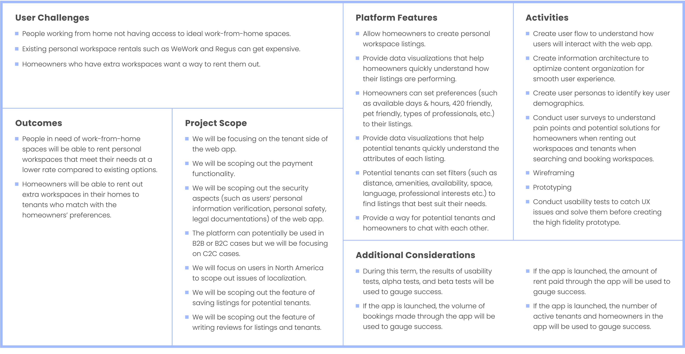
User Persona
The design team collaborated on conducting market research, analyzing the collected data and creating two fictional user personas that would communicate our prospect users goals, frustrations, etc. Alice Wu and Marina Moore represent two distinguished user demographics, which demonstrates the variety of our end-users.
We chose to use the personas we created as female professionals to demonstrate the diversity of users, regardless of their race or gender. The logic behind choosing two very contrasting colors, blue and red, also supports the same ethics. More information on branding and color theory can be found in the User Interface tab.
Information Architecture
Home Page
Our home page is the landing page, where the users will see descriptive and written information about DimpleDesk and the services we offer, as well as search input section to search for desired listings based on location. Users can have access to all the data regardless of them being signed in or logged in. We intended to get the user to their desired data output as soon as possible. Therefore, the content provided on Home Page is for onboarding and the focus is on search functionality.
Search Listings
Users can search for their desired listings by inputting location keywords in the search bar input section and view the search results as listing card/s. The listing cards contain information about the workspace name, workspace type, distance from the users' location, listing view number, industry type, rental price (based on the activated rental term filter option - Daily/Weekly/Monthly). On search result page, users cna use the filter options to continue refining their search results.
Bookmarked
DimpleDesk users can bookmark and store the listings they are interested in. The purpose is to allow user bookmark listing to review and have easier access to them for later. The indicating component for Bookmarked listings is the Bookmark button that will be displayed in full color if the listing is Bookmarked.
The Bookmarked feature page can be found on bottom navigation for mobile sizes, and at the top navigation menu in the header of the web app for desktop sizes.
Contacted
Listings contacted by users get stored in Contacted page for users to keep track of contacted listings, to contact the same host to rent the workspaces they have previously booked and are satisfied with the space. The contacted listing do have a "Contacted" tag indicator located on the top left corner of contacted listing cards.
Contacted page also can be found on the bottom navigation on mobile device sizes, and top navigation in header section on Desktop sizes.
Profile
User can search for listings without having to register for an account. However, some functionalities such as Contacting the host or Bookmarking listings requires completed and registered profile. This approach will help users find desired listings first, and for higher security and accuracy in the shared information with the listing's Host, user is prompted to provide personal information via user Profile.
Information such as user's full name, professional role, industry or field, etc.can be found and edited in profile. The mentioned data will be shared with the Host through email if the user chooses to "Contact Host". Prior to sharing the personal information available on the users profile, users will receive a concent pop-up, displaying a review of the information that will be shared with Host.
User Task Flow
The flow of the web app begins from the home page, where the user can choose to search for listings before logging in or even signing up. The intention was to navigate the user to the search results quickly. Furthermore, this platform didn't require extensive onboarding process since the user can use the search bar to find listings. Therefore, the provided content on the landing part of the Home page eliminated the need for designing onboarding screens.
Collaborating on the UserFlow within the design team, we were able to focus on the user task flow for each feature individually and refine, finalize and combine each segment as we reviewed the results during weekly team meetings. The final UserFlow is the result of 5 iterations within 2 weeks of development, which allowed us to improve the flow while taking constraints set by the developers and the business requirements into effect.
Affinity Diagram (Amenity Options)
Our platform created a massive inventory of amenity options, considering many aspects while conducting the list of amenity options suitable for efficient workspace. We chose to utilize Affinity Diagram to filter down and create categories for amenity options, and we were able to refine three main categories to classify the data with. Both designers and developers were the participants in refining the amenity categories.
Business Utilities, Facilities and Common Areas are the 3 main categories, which also helps the visual hierarchy when designing for the User Interface. We then utilized this classification to group the amenity filter options for each listing. We also planned to design customized icons for each amenity option to show them as descriptive and visually appealing to our end-users, helping them identify options much faster.
Prototyping Feature UX
DimpleDesk layout is designed on a 6 column-grid for mobile device sizes, and 12 column-grid for desktop sizes. The intention was to reserve as much white space on the interface for the user to have more focus on the detailed information provided on listing cards much faster and more efficiently.
The listing cards will be populated in single columns on small screen sizes, and in 2 columns for large screen size. The third and left side column of large screen sizes is a static and fixed column, which contains filters for more specific search results. This column contains the Contact Host CTA on Listing Information page.
Listing result page
Listing page
Hi-fidelity Wireframes
The hi-fidelity wireframes showcased in the following sections are for both Mobile (375px width) and Desktop(1080px width) sizes. The Mock-ups enhanced with color and visual assets can be found in the User Interface tab of this online portfolio.
Sign Up
The user sign-up process consists of 5 steps, starting by using the third-party API to log-in to the platform. Users can login or sign-up via Linked-in, Google or Facebook accounts. The information retrieved from these accounts, such as name, profession, etc., will be saved in the user profile.
Mobile - Sign Up step 2
The displayed screen is the second step after successfully logging in via third-party API. User is prompted to input their professional role, field and industry. We use this data to help users find workspaces relevant to their current professional industry of interest.
Desktop - Sign Up step 2
The status bar at the top of the screen is a subtle indicator of the remaining steps. Users can choose to complete the steps and set up their profile information or close out of the modal via the close button in the top right corner. Skip the step and go to the next step, fill out the input section, and activate the "Continue" button.
Mobile - Sign Up step 3
The following step after providing information about their profession, the user is prompt to input their contact information. The email input section won't be an editable input area since the user is already logged-in via an existing account connected to an email.
Desktop - Sign Up step 3
The following steps, steps 4 to indicate whether the user is fully vaccinated, and step 5 prompts the user to provide a short description about themselves, with a maximum 300 character limit. All the inputted information will be stored in the user profile.
Home Page
We dedicated the home page of DimpleDesk to a brief introduction of the features, the team members and their roles, and a contact form for our users to reach out to us.
The placeholder in the first section is where the hero image will be placed. Followed by a short description of the platform.
Mobile - Home Page (Landing page)
The navigation bar with four main features supported by DimpleDesk is located statically and sticky at the bottom of the screen. Therefore, the search bar, our primary and most important feature, is designed at the very top part of the screen.
Desktop - Home Page (Landing page)
On desktop sizes, we chose to have the top navigation sticky and accessible for the user to navigate through the features sections. The navigation bar on the desktop contains the home page navigation menu item, the search bar, and the remaining features.
Workspace Type Modal
Mobile - Workspace Type Filter Card
After inputting the desired location keywords in the search bar, the Workspace type modal will be displayed. User is prompted to choose a private or shared workspace, depending on their preference. But activating either option will filter down the search results displayed in the following section.
Desktop - Workspace Type Filter Card
After choosing the workspace type filter card and clicking on the "Show Listings" button, the modal will close and continue to search results. To skip this step, click on the "Skip for now" tertiary button.
Search Result Listing Cards
Based on the inputted location and the applied filters, the search result will get updated, and the relevant listing information will be displayed as cards. Detailed information about listing cards is provided in the following sections.
Mobile - Search Result
The filter option in the mobile sizes is next to the search bar in the top navigation. By activating the filter button, filter options will be displayed. The user then can adjust their search results by activating their desired filters.
Desktop - Search Result
As displayed, the filter button on the mobile size is now taking one-third of the desktop size. The four categories of Workspace Type (previous section), Rental terms, Amenities and Industry Interests.
Rental Duration
Mobile - Rental Duration Filter Cards
Rental duration is the indicator of price type displayed on the listing cards and the listing page. The filter cards function similar to Workspace Type filter.
Desktop - Rental Duration Filter Cards
Based on our UX strategy, we decided to have 3 Daily, Weekly, and Monthly options to make the price estimate adjustable to users' preferences.
Amenity Filters
Mobile - Amenity Filter Cards (Unselected)
Similar to the previous filter options, amenities filter options cards contain descriptive icon (30px x 30px) and the title of the amenity.By utilizing affinity diagram, we created five categories to divide the amenity types for the list of amenities per listing.
Desktop - Amenity Filter Cards (Selected)
The displayed Wireframes demonstrate how the selected filters function. Once a filter or more is selected, the "Show Listings" CTA button is activated.
Industry Interests
Mobile - Industry Interests (Unselected)
Industry interests are another filter option that helps users filter down search results to their in
Desktop - Industry Interests (Selected)
The chosen Industry type appears as tag buttons with a close button, for users to discard selection one by one or use the "Clear Selection" tertiary button. By choosing one or more industry tags, the "Show Listing" CTA gets activated.
Activated Filter Options
The selected filters and the filter button will be displayed as activated, and by removing each filter, the filter button will be displayed in an inactive state.
Listing Page
The listing page is consisted of many critical sections, providing detailed information about the workspace, the property and the Host. The listing page starts by showcasing the brief information provided on the listing cards, such as the name of the property and the Host, workspace name, Industry tag, number of views and the estimated distance from the users current location.
Mobile - Listing Detail Page (First Half)
The price estimate of the chosen listing, based on the activated Rental Duration type based on user's preference, and the "Contact Host" CTA are located statically at the bottom of the screen, prompting the user to contact the host as soon as possible
User can access the date picker and rental duration filter option via the "Calendar" button at the top right in the top navigation section. Both routes will take the user to choose a date and desired rental duration starting from the chosen date. The rental duration options are preset and include Daily, Weekly or Monthly.
Desktop - Listing Detail Page (First Half)
The date and duration filter options, as well as the "Contact Host" CTA, are displayed on the left column on Desktop Sizes. (Similar to our approach on listing search result page and appropriate filter options).
After choosing the starting date and desired duration period, the user can reach out to the Host. If the user is not logged-in or has an incomplete profile, a relevant pop-up will take the user to start logging in or complete the remaining sections. The summary of the information provided on the profile will be sent to the Host via email. Consent pop-up will be displayed before the personal data of the user is shared with the Host.
User Interface
The design team collaborated on creating mood boards by collecting inspirational examples. Therefore, deciding on the UI direction took place within the team.
In the following sections you can find the design decision behind our branding and utilized visual such as Illustrations, GIF animations and UI Kit.
Branding
We sketched and designed up to 5 logos per team member, narrowing down ideas by brainstorming and discussing the concept behind the design. The chosen logo (displayed here) is a conceptual representation of customers' positive experience with our platform after finding their desired workspace.
White Background
Reversed Colors
Our logotype is a modified rendition of the "Poppins" typeface, displayed in horizontal alignment for large screens and vertical alignment for small screens.
We chose color blue as our primary color, due to the nature of our concept, which is to provide efficient service for professionals in a majority of industries.
Feature GIF Animation
The displayed GIF animations are used to create a visual asset as onboarding and quick introduction of the features. The concept behind the stop-motion was the result of group discussions; however, one of the designers did the execution and stop-motion editing. The remaining two, including myself, took responsibility for all illustrations utilized across the platform.
UI Kit
The intention behind choosing a high-contrast color as an accent color in saturated pink color was to create a balanced contrast between the two shades against the white space reserved to less clutter the interface.
Our color palette consists of shades and tints of Blue, DimpleDesk’s primary color, with light red as our accent color. We chose to balance these colours to remain gender-neutral in support of our target audiences.
Typography
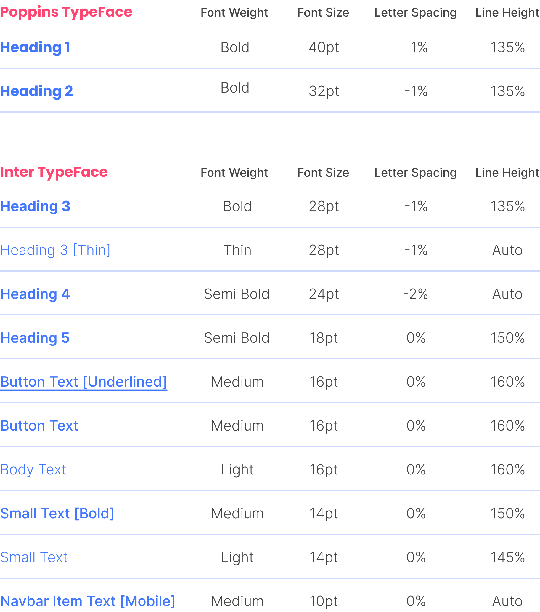
Poppins typeface being our primary font family, which we also leveraged in our logotype. In addition, we utilized the "Inter" typeface for the body text and headings 3-5 due to its legibility and moderate kerning suitable for our content-heavy platform.
Buttons
Iconography
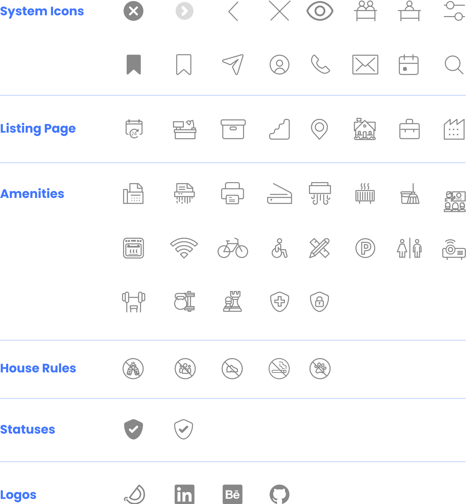
Our visual assets and icons make it easier for users to search, filter, and identify desired listings, with speed and efficacy.
All the utilized icons across platform has been designed and created via Figma and Adobe Illustrator (shared via Creative Cloud).
Illustrations
The chosen direction for the illustration and brainstorming ideas on approaching this asset was done entirely within the design team. However, drawing, polishing and executing each illustration assigned to each member was an individual activity.
The collection of illustrations required for the platform, such as the hero image, pop-ups and modals illustrations, etc., was divided between two designers. The third designer was responsible for the gif animations showcasing the features displayed on the home page.
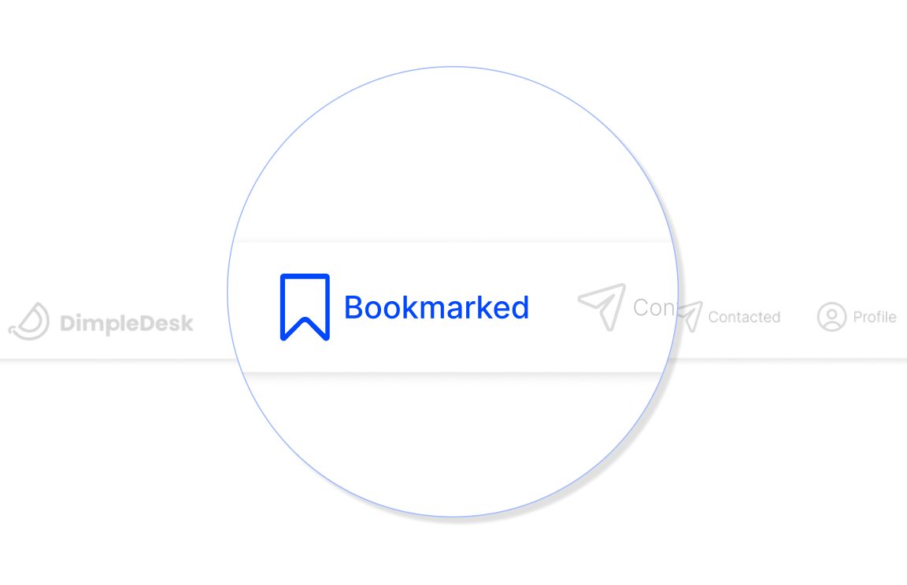
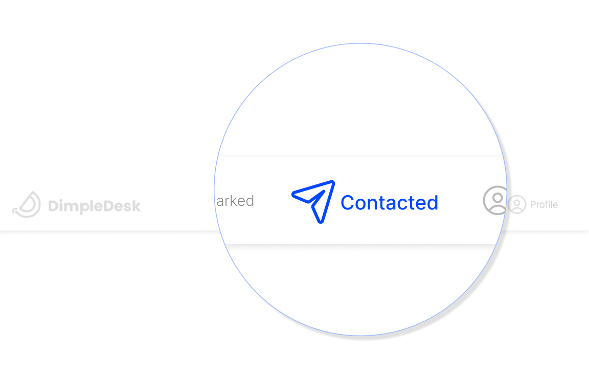
Contacted and Bookmarked Pop-up Illustrations
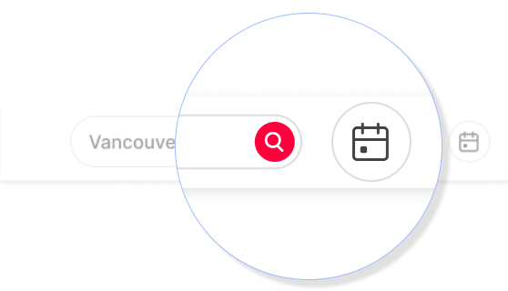
Calendar and Confirmation Pop-up Illustrations
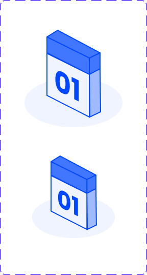
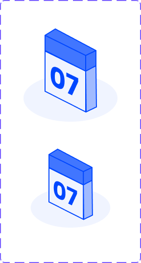
Rental Duration Isometric Illustrations
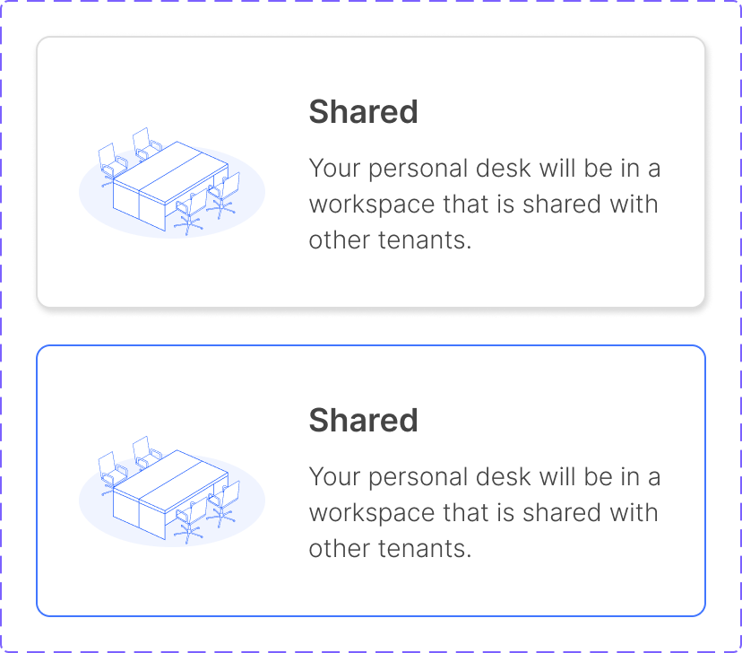
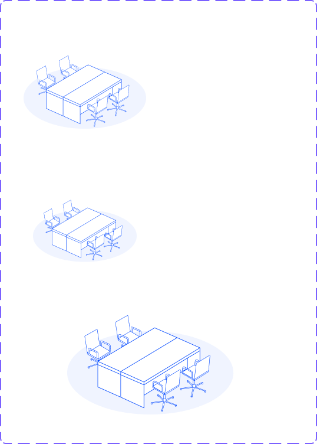
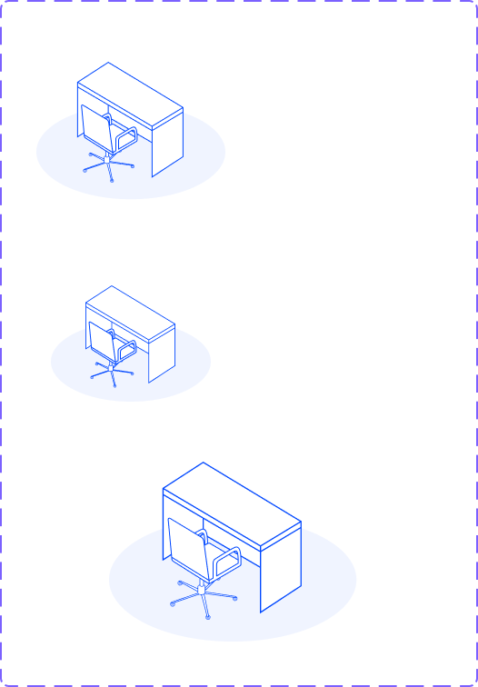
Workspace (Shared or Private) Illustration
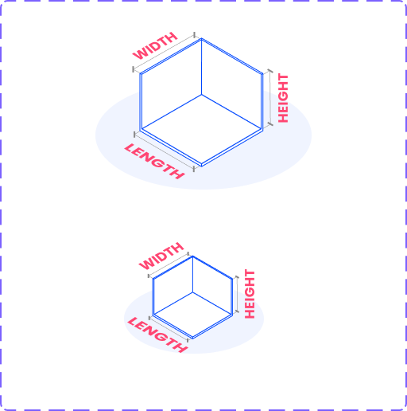
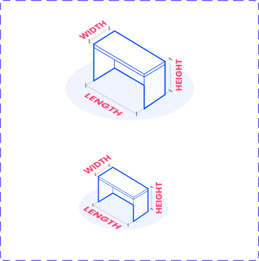
Three descriptive Illustrations (Listing page illustrations)
Components
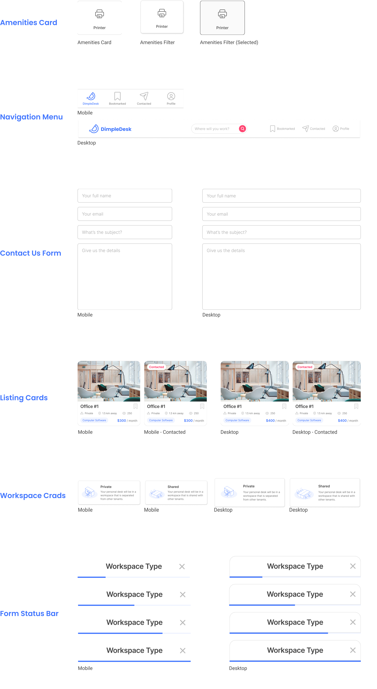
Mockups
During the final weeks of the project, and after finalizing the UI Kit, the transition from hi-fi wireframes to mockups started.
Having the UI kit showcasing the component library, mock-up designs will demonstrate the behaviour and placement of each asset. Detailed information about the listing cards is also provided in the following sections.